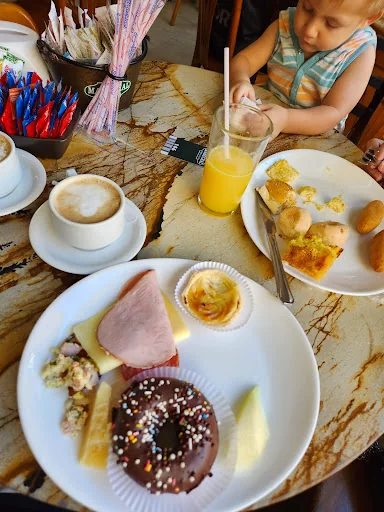
01
Café da manhã
Começos de dia com mesa cheia e café passado.
Padaria, café da manhã e doceria em um endereço clássico de Cuiabá. Fornadas, vitrines generosas e aquele café que resolve a manhã sem fazer discurso motivacional.
Entre balcões cheios, mesas acolhedoras e o movimento de quem começa cedo, a Marechal mistura padaria clássica e café contemporâneo sem apagar o que já funciona.
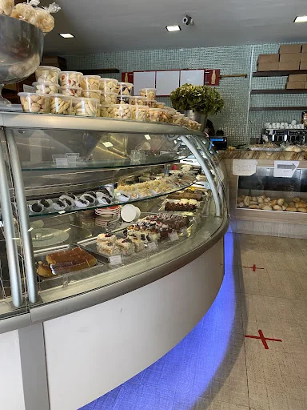
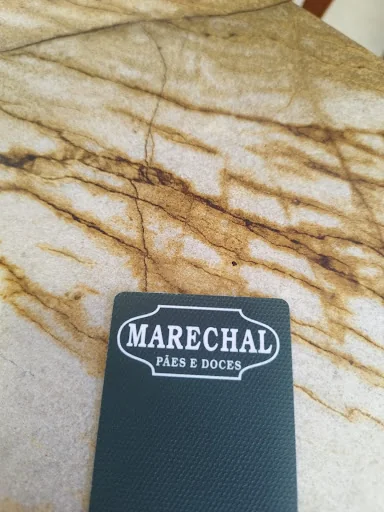
Uma seleção que representa a variedade da Marechal: cafés, doces, salgados, refeições rápidas e fornadas frescas preparadas para diferentes momentos do dia.

Começos de dia com mesa cheia e café passado.
Opções para um lanche rápido ou uma pausa maior.
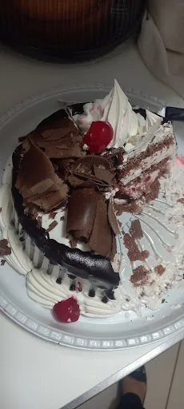
Opções doces para diferentes momentos, com variedade e apresentação cuidadosa.
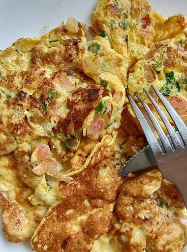
Texturas e recheios preparados para valorizar sabor, frescor e variedade.
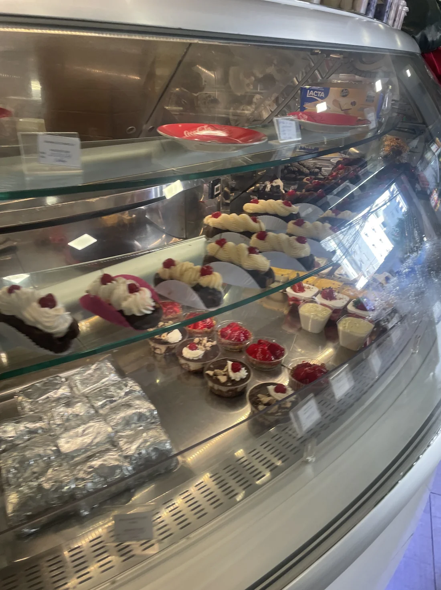
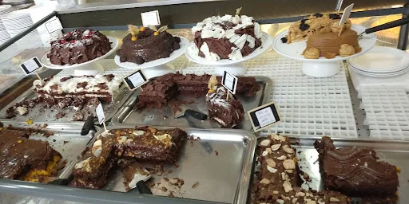
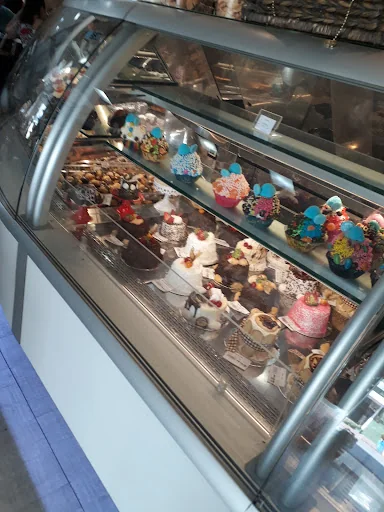
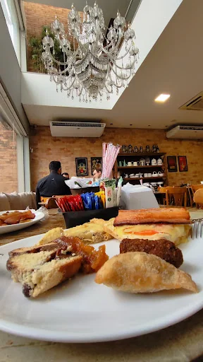
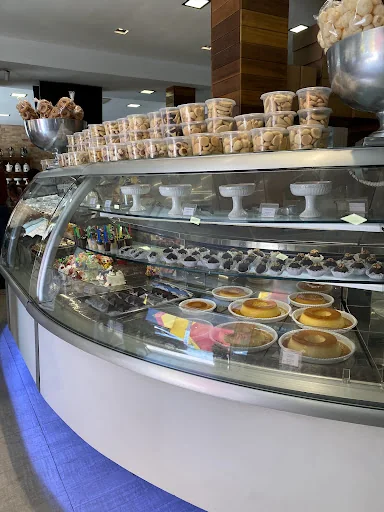
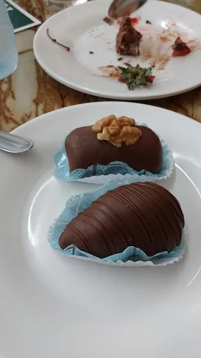
“Café bom não precisa complicar. Precisa chegar quente, acompanhado e na hora certa.”
“Excelentes salgados. Ambiente aconchegante e muito elegante. Recomendo.”
“A comida excelente e o ambiente confortável.”
“Panificadora p/ lanches e refeições rápidas. Salgados, sanduíches, bolos, tortas doces e salgadas, pães variados, frios etc. Tudo muito gostoso.”
“Ótimo lugar.”
EndereçoAv. Mal. Deodoro, 1231
Centro Norte, Cuiabá - MT
Telefone(65) 2127-1509
HoráriosSeg–sáb · 06:00–20:00
Dom · 06:00–15:00